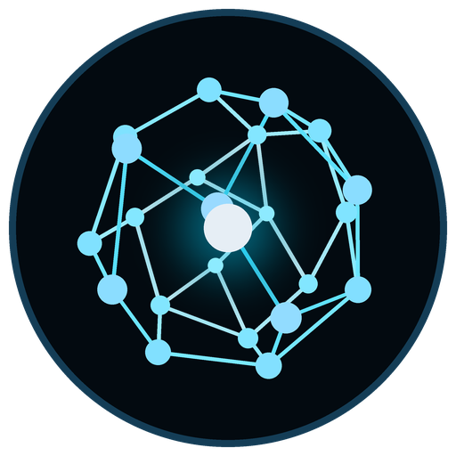
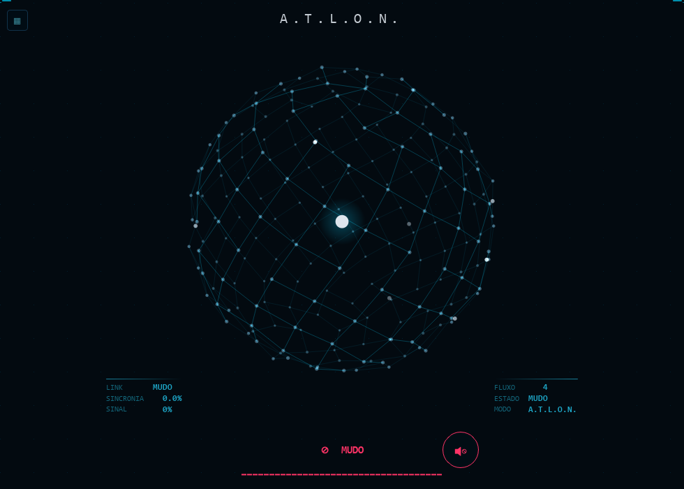

Converse do seu jeito
Escolha a voz, ajuste seu bom dia e conecte as contas que você quer usar. As respostas ficam no Atlon.

A.T.L.O.N.Mark I / Beta para Windows
Um assistente que ouve suas ideias e ajuda a levar o trabalho adiante. Do dia a dia ao desenho técnico.
AutoCAD e Revit · Documentos · Rotina pessoal
Por dentro do Atlon
Converse por voz ou digite na própria interface. O Atlon usa as conexões que você configurar para responder e preparar ações.
VOCÊ
Como vai funcionar meu bom dia?
Você escolhe seu nome, sua cidade e o que quer ouvir. Depois, é só pedir “bom dia” para receber sua rotina.
Exemplo ilustrativo. Esta página não acessa seu microfone nem suas contas.
Escolha a voz, ajuste seu bom dia e conecte as contas que você quer usar. As respostas ficam no Atlon.
Na estação conectada, consulte seleção e propriedades do projeto. Peça orientação com referências de AutoCAD e Revit.
Nas operações disponíveis, o Atlon prepara uma prévia. Você confirma a alteração e pode pedir para desfazê-la.
Engenharia, na mesma conversa
Trabalhe com mouse ou pinça. Com o conector ativo, o Atlon atualiza a leitura parcial do arquivo, da vista e da seleção. No Gemini Live, Olhar projeto permite acompanhar mudanças visíveis na janela escolhida.
Peça “o que eu selecionei?” ou explique o que quer mudar. As alterações dependem dos comandos disponíveis, da prévia e da sua confirmação.
m Falou “1,80”? São 1,80 metros. Outra unidade, só quando você indicar.

A.T.L.O.N. / Mark I
Baixe o instalador, siga as etapas e configure sua chave do Gemini no Atlon. O Python já vem incluído.
Windows 10 ou 11 de 64 bits · Beta 1.1.1 · Sem login para baixar
O essencial para usar
Instalação, primeiros passos e conexões. Consulte aqui ou salve o PDF para ler depois.
Baixar guia em PDF ↓Instale o Atlon e cadastre sua chave pessoal do Google AI Studio no campo protegido. Escolha seu microfone e sua saída de som na configuração guiada. As cotas dependem da sua conta no Google.
O beta ainda não tem assinatura digital de editor. Se o Windows mostrar um aviso, confira a origem do arquivo e as notas da versão.
Na engrenagem, abra Configuração guiada. Em Do seu jeito, ajuste nome, cidade e bom dia. Você também pode pedir “configure meu bom dia” ou “ative as palmas”. O Hub de IAs reúne as conexões opcionais e a escolha de modelos; voz e IA são escolhas separadas.
Os programas precisam estar instalados separadamente. Abra Desenho Técnico e conecte a janela do projeto. O Revit requer pyRevit/Agent Runtime; somente leitura permite consultar, mas não editar.
Comece pela leitura da seleção. Para alterações disponíveis, confira a prévia e confirme. O acompanhamento visual é opcional e usa imagens da janela CAD no Gemini Live; pode consumir cota.
Google, ChatGPT e Claude são opcionais. Use a configuração guiada e o Hub de IAs; cada serviço exige sua própria autorização e acesso compatível. Suas contas e chaves ficam no seu computador.
Para atualizar, feche o Atlon, baixe o novo instalador e instale por cima, na mesma pasta. Não precisa desinstalar antes. Configurações e memórias são preservadas. Mark I é a primeira geração; as próximas serão Mark II e Mark III.